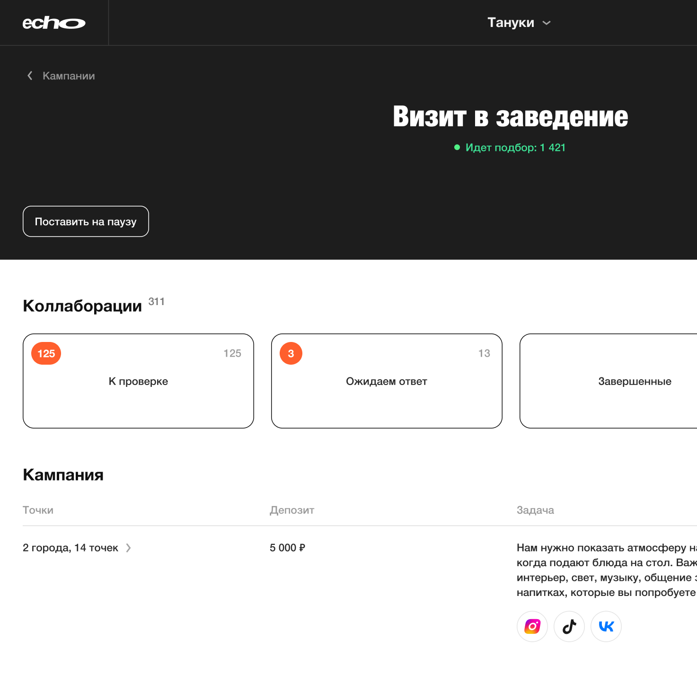
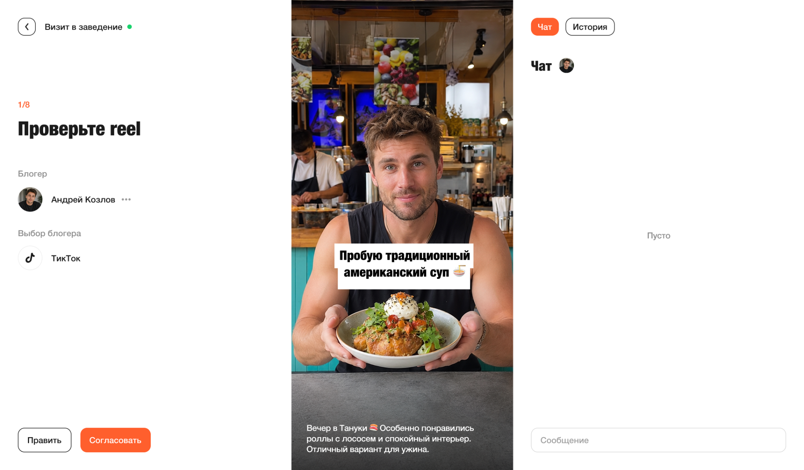
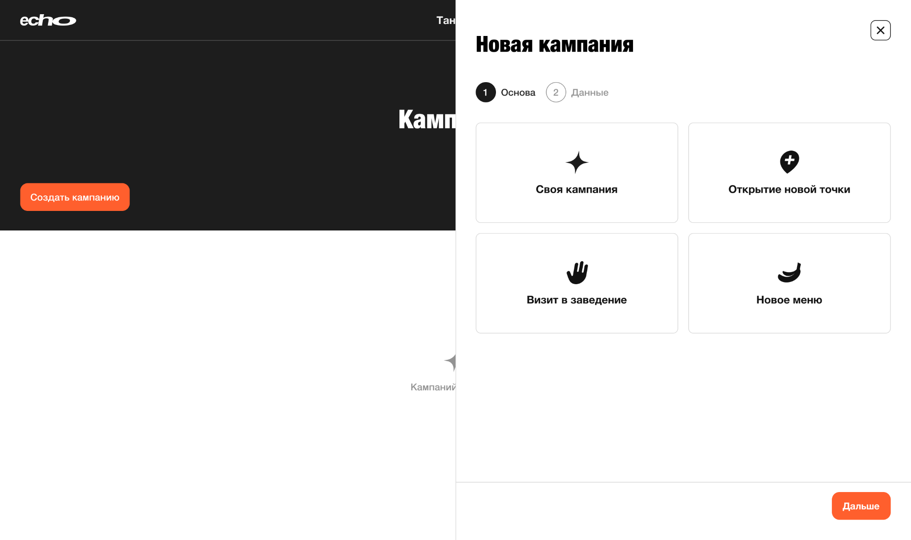
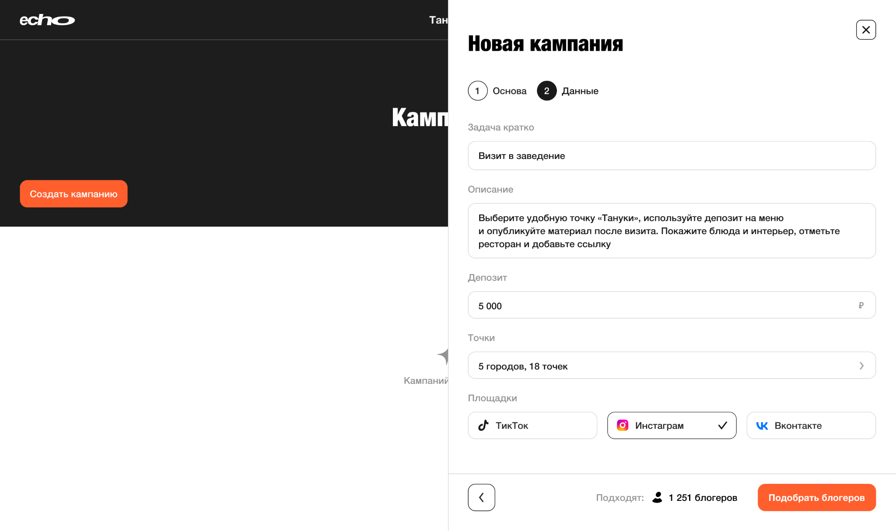
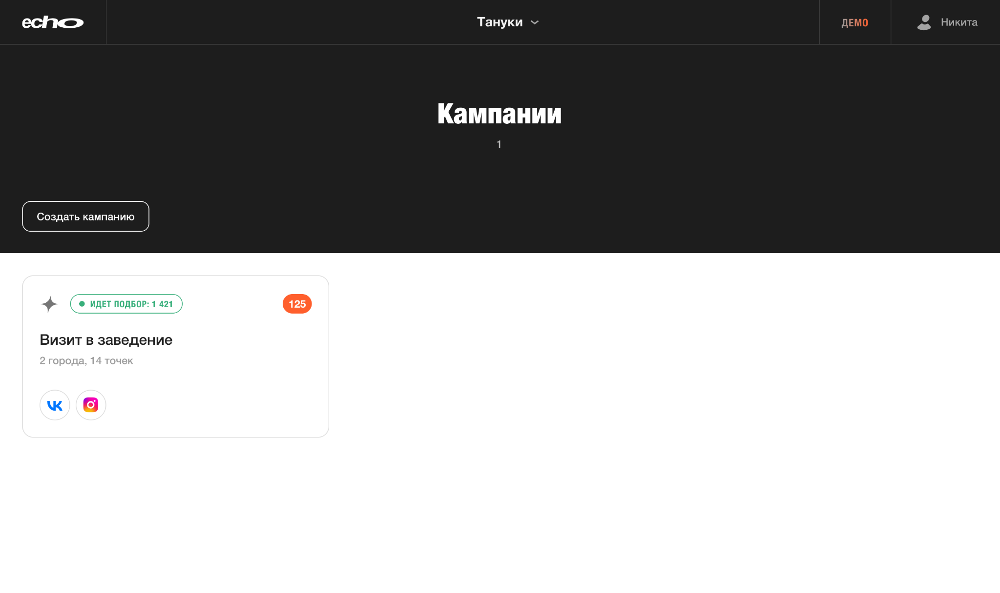
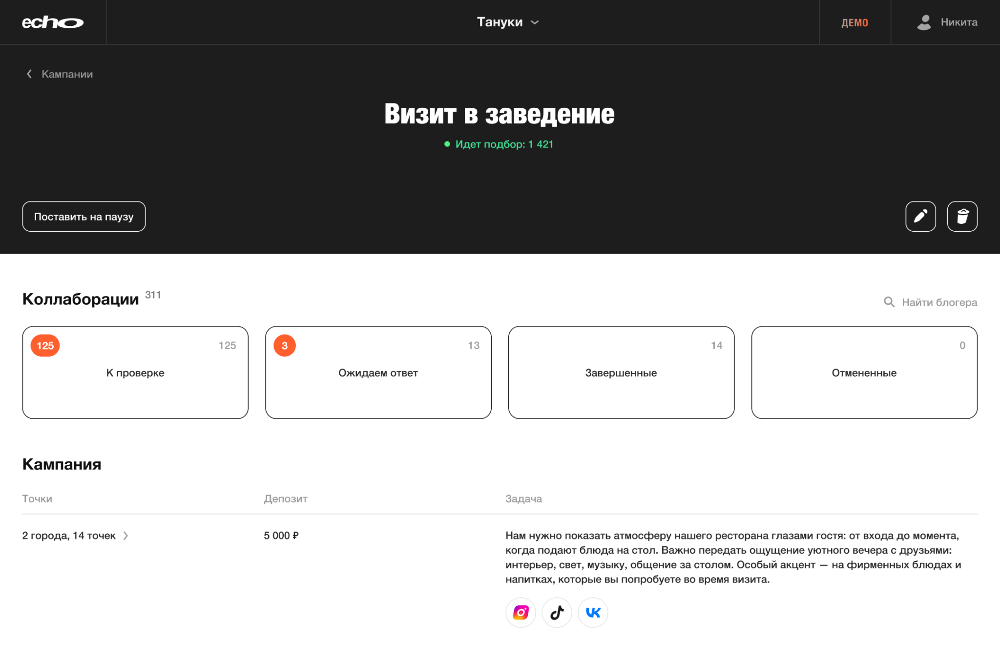
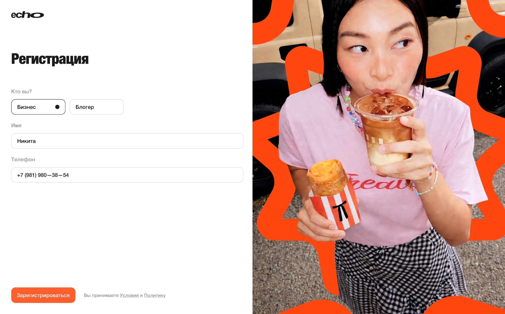
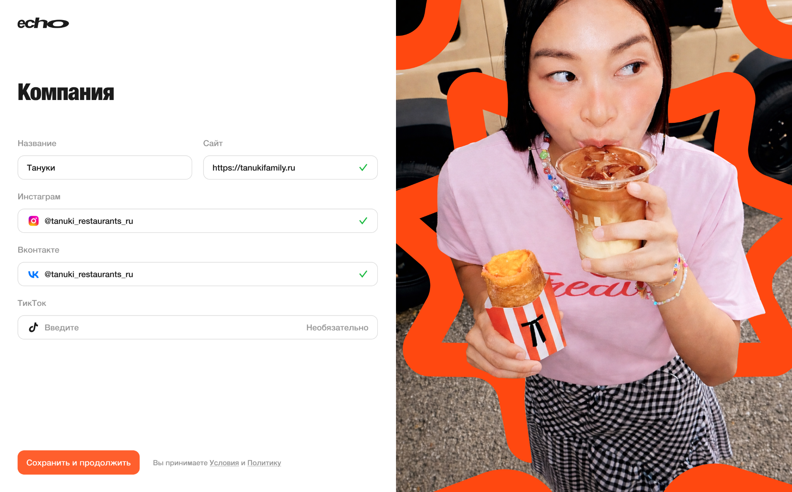

Довёл идею рекламной платформы до полноценной дизайн-концепции для привлечения инвестиций
Мой вклад
Discovery, Information Architecture, UX/UI Design, Branding, Design System
2026
Презентация кейса на 2 мин.

Мой вклад
Discovery, Information Architecture, UX/UI Design, Branding, Design System
2026
Презентация кейса на 2 мин.

Проблема
В качестве исходных данных была только ссылка на зарубежный сервис. Требования к платформе, её структура и ключевые пользовательские сценарии ещё не были определены.
Discovery
Бизнес задаёт условия кампании, сервис подбирает подходящих блогеров. Блогеры сами откликаются на кампании, а бизнес рассматривает заявки и выбирает участников.
Платформа рассчитана на две стороны — бизнес и блогеров. На стороне бизнеса выделил две роли с разными задачами и правами доступа к рекламным кампаниям.
| Роль | Кто это и какие задачи решает | Что важно учитывать |
|---|---|---|
| Главный менеджер | Создаёт рекламные кампании, назначает ответственных и определяет, какие кампании доступны менеджерам ресторанов. | Нужны обзор кампаний и удобное управление доступами сотрудников. Сервис оплачивает бизнес. |
| Менеджер ресторана | Работает с кампаниями, связанными с его ресторанной точкой: следит за коллаборациями и согласовывает материалы. | Видит только кампании своей точки. Важно быстро переходить к задачам, требующим внимания, без лишней навигации. |
| Блогер | Небольшой автор контента, для которого бартер — дополнительная выгода. Пользуется платформой бесплатно. | Коллаборации — не основная работа. Нужно быстро понимать условия предложения и следующий шаг; жёсткий порог по подписчикам не закладывали. |
Различия между ролями учёл при формулировании JTBD и построении информационной архитектуры: главный менеджер управляет кампаниями и доступами, менеджер ресторана работает в контексте своей точки, а блогер быстро понимает условия сотрудничества.
Для двух сторон платформы выделил три роли: главного менеджера, менеджера ресторана и блогера. Сформулировал их задачи через JTBD и перевёл в требования к пользовательским сценариям и интерфейсам.
| Роль | Задача пользователя (JTBD) | Что нужно в интерфейсе |
|---|---|---|
| Главный менеджер | Когда нужно запустить продвижение сети или отдельного ресторана, хочу создать рекламную кампанию и настроить её условия, чтобы запустить сотрудничество с блогерами для нужных точек. | Создание кампании по шаблону или с нуля, выбор ресторанных точек и настройка условий. |
| Когда над кампаниями работают сотрудники разных ресторанов, хочу назначить менеджерам доступ к нужным кампаниям, чтобы каждый отвечал только за свою работу. | Управление доступами сотрудников и привязка кампаний к ответственным менеджерам и точкам. | |
| Когда одновременно запущено несколько кампаний, хочу видеть их состояние и задачи, требующие внимания, чтобы контролировать работу без постоянных уточнений у сотрудников. | Общий список кампаний со статусами, количеством коллабораций и индикаторами задач. | |
| Менеджер ресторана | Когда я приступаю к работе, хочу видеть только кампании своей ресторанной точки и их условия, чтобы быстро находить свои задачи и не путаться в чужих кампаниях. | Список доступных кампаний с привязкой к точке, статусами и условиями. |
| Когда одновременно идут несколько коллабораций, хочу видеть их этапы и необходимые действия, чтобы не контролировать каждую через переписку. | Список коллабораций со статусами, сроками и следующими действиями. | |
| Когда блогер прислал материал, хочу быстро проверить его и принять решение, чтобы довести коллаборацию до публикации. | Просмотр материала и действия по согласованию в контексте коллаборации. | |
| Блогер | Когда мне приходит предложение о сотрудничестве, хочу сразу понять условия и вознаграждение, чтобы решить, подходит ли оно мне. | Карточка предложения с условиями, сроками, вознаграждением и решением об участии. |
| Когда я принял предложение, хочу понимать текущий этап и свой следующий шаг, чтобы выполнить договорённости без лишних уточнений. | Последовательность этапов, задачи, сроки и уведомления о нужных действиях. | |
| Когда материал готов, хочу передать его на проверку и видеть результат, чтобы понимать, завершена ли коллаборация. | Отправка материала, статус согласования и итог сотрудничества. |
В Rippla блогер откликается на кампанию, а в ECHO предусмотрена автоматическая рассылка подходящих предложений. Поэтому при проектировании нужно было связать действия обеих сторон в понятный последовательный процесс — от приглашения до публикации.
На этапе проработки концепции рассмотрели, что именно ограничивать в платной подписке: число ресторанных точек, кампаний или коллабораций. В итоге с заказчиком остановились на лимите одновременно активных коллабораций — их количество зависит от тарифа. После завершения коллаборации слот освобождается для следующей. Блогеры используют платформу бесплатно.
Когда бизнес достигает лимита, менеджер может докупить дополнительные слоты или перейти на тариф выше. Для интерфейса это означало отдельный сценарий: показать ограничение и дать продолжить работу, не теряя контекст кампании.
После проработки бизнес-модели выделил показатели, по которым можно будет оценивать эффективность платформы после запуска. Важно было учитывать не только коммерческие результаты, но и то, насколько успешно пользователи проходят ключевые сценарии.
| Метрика | Что измеряем |
|---|---|
| Activation Rate | Доля компаний, запустивших первую рекламную кампанию после регистрации |
| Collaboration Completion Rate | Доля принятых коллабораций, завершившихся подтверждённой публикацией |
| Time on Task | Время, необходимое менеджеру для проверки и согласования материала |
| Customer Retention Rate | Доля компаний, продолжающих оплачивать подписку |
| MRR | Ежемесячная регулярная выручка от подписок |
Основной фокус UX — помочь пользователям быстрее выполнять задачи и доводить коллаборации до результата. Это должно положительно влиять на ценность продукта для бизнеса, а в перспективе — на удержание платящих клиентов.
На основе JTBD отделил обязательные возможности от второстепенных. В первую версию включили только сценарии, необходимые для полного цикла коллаборации — от создания кампании до согласования публикации, с учётом сроков и бюджета проекта.
После определения состава первой версии я продумал структуру разделов и навигацию для обеих сторон платформы. Было важно сократить лишние клики в повседневных сценариях, но при этом сохранить контекст работы. В бизнес-части одним из ключевых решений стало расположение коллабораций: вынести их в главное меню или разместить внутри рекламных кампаний.
| Вариант | Плюсы | Минусы |
|---|---|---|
| Отдельный раздел «Коллаборации» в главном меню | Быстрый доступ из любой точки продукта и общий список всех коллабораций. | Коллаборации разных компаний и кампаний оказываются вперемешку. Нужны фильтры или переключатели, а при большом количестве кампаний легко потерять контекст и перепутать условия. |
| Коллаборации внутри каждой рекламной кампании | Менеджер сразу видит, к какой кампании относится работа, и может свериться с её условиями. | Появляется дополнительный уровень навигации; сложнее одним взглядом охватить коллаборации сразу по всем кампаниям. |
Выбрал второй вариант — работа с коллаборациями начинается в контексте конкретной кампании. Чтобы дополнительная вложенность не замедляла менеджера, на странице компании предусмотрел быстрый переход к коллаборациям.
| Приоритет | Сценарий | Почему такой приоритет |
|---|---|---|
| 1 | Работа с коллаборациями | Основная ценность для бизнеса: проверка материалов, согласование, доработка и контроль статусов. Самый насыщенный UX-сценарий. |
| 2 | Создание рекламной кампании | Здесь задаются условия, от которых зависят подбор блогеров и дальнейшие коллаборации. |
| 3 | Подбор блогеров | Нужно показать ход автоматического подбора, найденных участников и состояние кампании. |
| 4 | Компании и навигация | Важно быстро находить нужную кампанию и коллаборацию, не теряя контекст компании. |
| 5 | Регистрация и создание компании | Обязательный вход в продукт, но с относительно небольшим количеством действий и состояний. |
Первым подробно покажу работу с коллаборациями — самый сложный и значимый для менеджера сценарий.
UX Design
Первым делом изучил, как популярные платформы организуют просмотр коротких вертикальных видео, чтобы использовать уже знакомые пользователям решения.
| Платформа | Как реализован просмотр |
|---|---|
| ВКонтакте · Клипы | Вертикальные видео занимают практически всю высоту экрана. Переключение между роликами происходит без возвращения в ленту. |
| YouTube · Shorts | Видео находится в центре внимания, а основные действия располагаются рядом с плеером. |
| Instagram · Reels | Вертикальный формат с последовательным просмотром роликов и быстрым доступом к действиям. |
Во всех трёх сервисах видео остаётся главным элементом интерфейса, а переключение между роликами не требует лишних переходов.
Менеджеру важно не просто просматривать ролики, а последовательно проверять и согласовывать публикации. Поэтому при проектировании сосредоточился на двух UX-решениях.
| Решение | Почему так |
|---|---|
| Видео в центре экрана | Сохранил вертикальные пропорции и выделил ролику практически всю доступную высоту экрана. |
| Непрерывное согласование | После согласования автоматически подгружается следующее видео с данными другого блогера, без открытия новых карточек или модальных окон. |
Менеджер может проверить все материалы в одном рабочем пространстве, не тратя время на лишние переходы.
При проектировании учитывал, что менеджер чаще всего работает с самим видео и его контекстом, а к дополнительным инструментам обращается значительно реже. Поэтому разделил экран на три зоны:
| Зона экрана | Назначение |
|---|---|
| Слева — контекст | Информация о блогере, публикации и социальной сети. |
| По центру — видео | Главный элемент, которому отведена большая часть доступной высоты. |
| Справа — дополнительные инструменты | Чат и история взаимодействия, которые нужны только в отдельных случаях. |
Менеджер видит всё необходимое для согласования на одном экране, а второстепенные инструменты не отвлекают от основной задачи.

| Ключевые UX-метрики | Что хотим понять | Способ проверки |
|---|---|---|
| 1. Время проверки серии материалов (Time on Task) | Сколько времени занимает последовательная проверка нескольких видео? | Дать серию Reels с заданными условиями. Засечь время от первого видео до последнего решения. |
| 2. Успешность согласования (Task Success Rate) | Верно ли менеджер согласовывает подходящие материалы и отправляет остальные на доработку? | Заранее определить правильное решение для каждого ролика. Рассчитать долю корректно обработанных материалов. |
| 3. Частота ошибок (Error Rate) | Путает ли менеджер блогеров, материалы или действия согласования? | Во время проверки серии зафиксировать ошибочные решения и число ошибок относительно всех решений. |
Проверить, помогает ли рабочий режим быстрее и точнее согласовывать публикации.
| Гипотеза | Как проверить | Метрика |
|---|---|---|
| Непрерывный просмотр сокращает время проверки серии публикаций. | Сравнить рабочий режим с переходами обратно в список и без них. | Time on Task; Error Rate |
| Крупный вертикальный плеер помогает точнее оценивать материалы. | Сравнить крупный и компактный плеер на одинаковых заданиях. | Task Success Rate; Error Rate |
| Разделение контекста, видео и инструментов упрощает согласование. | Проверить, как быстро менеджер находит условия и принимает решение. | Time on Task; Task Success Rate |
Неочевидная гипотеза. Автоматическая смена видео может ускорять проверку, но повышать риск случайных согласований. Стоит сравнить автопереход с кнопкой «Следующий материал», оценивая не только скорость, но и ошибки.
Учитывал, что с платформой будет работать менеджер ресторана, а не SMM-специалист. Поэтому сначала выделил сложности, с которыми он может столкнуться при создании кампании.
| Ожидаемая проблема | Что важно учесть |
|---|---|
| Не знает, какую рекламную задачу выбрать | Помочь определиться с целью кампании. |
| Не умеет составлять техническое задание для блогера | Предоставить готовую основу с понятными условиями. |
| Не готов тратить много времени на настройку | Минимизировать количество действий и обязательных полей. |
| Сложное ТЗ избыточно для бартерного сотрудничества | Не усложнять процесс требованиями, которые не влияют на результат. |
Поскольку первая версия ECHO ориентирована на ресторанный бизнес, выделил три характерных сценария для создания рекламных кампаний.
| Сценарий | Задача |
|---|---|
| Открытие новой точки | Рассказать аудитории о новом заведении. |
| Визит в заведение | Получить публикацию блогера о посещении ресторана. |
| Новое меню | Привлечь внимание к новым блюдам или предложениям. |
Эти сценарии можно использовать как основу готовых шаблонов, чтобы менеджеру не приходилось каждый раз формулировать рекламную задачу с нуля.
Рассмотрел два варианта организации процесса.
| Подход | Преимущества | Недостатки |
|---|---|---|
| Создание с нуля | Полная свобода настройки. | Требует времени и понимания рекламных процессов. |
| Только шаблоны | Быстрый запуск типовых кампаний. | Ограничивает нестандартные задачи. |
Выбрал гибридный подход — три готовых шаблона для типовых задач и возможность создать собственную кампанию с нуля.
Чтобы не перегружать менеджера настройками, сначала предлагаю выбрать шаблон или собственный сценарий, а затем перейти к заполнению условий кампании.
| Этап | Что делает менеджер |
|---|---|
| 1. Выбор основы | Выбирает готовый шаблон или создание собственной кампании. |
| 2. Настройка условий | Уточняет задачу, описание, депозит, ресторанные точки и площадки для публикации. |
На втором шаге менеджер видит количество блогеров, подходящих под заданные условия, перед запуском подбора.
Пользователь начинает с понятной рекламной задачи и последовательно уточняет условия, не сталкиваясь сразу со сложной формой.


| Ключевые UX-метрики | Что хотим понять | Способ проверки |
|---|---|---|
| 1. Успешность создания кампании (Task Success Rate) | Может ли менеджер самостоятельно настроить кампанию по шаблону и с нуля? | Дать две задачи с заранее заданными условиями. Проверить, правильно ли создана каждая кампания. |
| 2. Время создания кампании (Time on Task) | Сколько времени требуется для создания типовой и нестандартной кампании? | Отдельно замерить время создания по шаблону и с нуля на прототипе. |
| 3. Частота ошибок в настройках (Error Rate) | Ошибается ли менеджер при выборе площадок, точек, депозита и описании задачи? | Сравнить введённые условия с заданием, посчитать пропущенные и неверно заполненные параметры. |
Проверить, помогают ли шаблоны и разделение формы на два шага менеджерам без опыта SMM.
| Гипотеза | Как проверить | Метрика |
|---|---|---|
| Готовые шаблоны облегчают запуск типовой кампании. | Предложить одну и ту же задачу с шаблоном и с пустой формой. | Time on Task; Task Success Rate |
| Гибридный подход лучше подходит для нестандартных задач, чем одни шаблоны. | Проверить создание нетиповой кампании при двух вариантах интерфейса. | Task Success Rate |
| Разделение выбора сценария и заполнения условий снижает ошибки. | Сравнить двухэтапную настройку с единой длинной формой. | Error Rate; Time on Task |
Неочевидная гипотеза. Шаблоны могут ускорять заполнение, но подталкивать к неверному выбору задачи. Поэтому важно отдельно оценивать корректность созданной кампании, а не только скорость её запуска.
При изучении рыночных решений обратил внимание на проблему ручных заявок: чем больше откликов получает кампания, тем больше времени менеджер тратит на проверку кандидатов.
| Подход | Преимущества | Недостатки |
|---|---|---|
| Ручные заявки | Менеджер самостоятельно выбирает участников. | При большом количестве откликов нужно проверить каждого блогера и принять решение. |
| Автоматический подбор | Система отбирает подходящих блогеров и отправляет им предложения. | Требуется заранее задать критерии отбора и предусмотреть состояния процесса. |
Для ECHO заказчик предусмотрел автоматический подбор, чтобы менеджеру не приходилось вручную обрабатывать поток заявок. При проектировании я учитывал особенности этой механики.
Подбор строится на сопоставлении условий кампании с характеристиками профилей блогеров: социальными сетями, количеством подписчиков и показателем IR. Если блогер соответствует условиям, платформа автоматически отправляет ему предложение о сотрудничестве.
После запуска кампании менеджеру важно понимать, что происходит без его участия. Поэтому информацию о состоянии подбора и количестве участников вынес непосредственно в список рекламных кампаний.
Менеджер видит ход подбора, не открывая каждую кампанию и не вмешиваясь в автоматический процесс.

| Ключевые UX-метрики | Что хотим понять | Способ проверки |
|---|---|---|
| 1. Понимание статусов (Comprehension Rate) | Различает ли менеджер подходящих кандидатов и блогеров, принявших предложение? | Показать разные состояния подбора и попросить объяснить их смысл. Оценить долю правильных ответов. |
| 2. Заметность статуса (Detection Rate) | Замечает ли менеджер состояние подбора и число кандидатов без подсказок? | Показать список кампаний и спросить, что происходит. Зафиксировать, кто самостоятельно заметил показатели. |
| 3. Успешность выбора действия (Task Success Rate) | Понимает ли менеджер, когда достаточно ждать, а когда нужно изменить условия? | Дать сценарии активного подбора и отсутствия кандидатов. Проверить правильность выбранного следующего действия. |
Проверить, понимает ли менеджер действия автоматизированной системы без ручного контроля каждого блогера.
| Гипотеза | Как проверить | Метрика |
|---|---|---|
| Статус подбора в списке кампаний уменьшает число лишних переходов. | Дать задачу узнать состояние нескольких кампаний со статусом в списке и без него. | Time on Task; число переходов |
| Количество подходящих блогеров до запуска помогает оценить условия кампании. | Проверить настройку кампании со счётчиком кандидатов и без него. | Task Success Rate |
| Пояснение причин нулевого результата помогает исправлять условия. | Сравнить пустое состояние с подсказкой и без неё. | Task Success Rate; Time on Task |
Неочевидная гипотеза. Точное число подходящих профилей может восприниматься как обещание будущих согласий. Стоит проверить, понятнее ли формулировка «Подходят по критериям» и пояснение, что приглашение не гарантирует участия.
При проектировании учитывал, что менеджеру важно быстро оценить состояние кампании и перейти к задачам, требующим его внимания. Поэтому разделил информацию по значимости.
| Приоритет | Элемент страницы | UX-решение |
|---|---|---|
| 1 | Состояние кампании | Объединил статус подбора с количеством найденных блогеров, чтобы сразу показывать ход процесса. |
| 2 | Быстрый доступ к коллаборациям | Разделил коллаборации по статусам и показал их количество. Задачи, требующие внимания менеджера, дополнительно выделил оранжевыми индикаторами. |
| 3 | Дополнительная информация | Условия кампании, депозит, ресторанные точки и площадки публикации разместил ниже, поскольку к ним обращаются реже. |
Менеджер сразу видит состояние кампании, понимает, какие задачи требуют внимания, и может перейти к нужным коллаборациям без лишней навигации.

| Ключевые UX-метрики | Что хотим понять | Способ проверки |
|---|---|---|
| 1. Время поиска задачи (Time on Task) | Насколько быстро менеджер находит публикацию, требующую согласования? | Показать кампанию с разными статусами и замерить время до открытия нужного материала. |
| 2. Заметность индикаторов (Detection Rate) | Обращает ли менеджер внимание на оранжевые индикаторы задач? | Показать экран без подсказок и отметить, кто самостоятельно заметил элементы, требующие внимания. |
| 3. Успешность навигации (Task Success Rate) | Может ли менеджер без ошибок перейти к нужной коллаборации? | Попросить открыть конкретную публикацию в заданном статусе. Оценить долю правильных переходов. |
Проверить, помогает ли информационная иерархия быстрее находить задачи, требующие внимания.
| Гипотеза | Как проверить | Метрика |
|---|---|---|
| Индикаторы внимания ускоряют поиск материалов на проверку. | Сравнить карточки коллабораций с акцентными индикаторами и без них. | Time on Task |
| Группировка коллабораций по статусам упрощает навигацию. | Сравнить статусные категории с общим списком и фильтрами. | Task Success Rate; Time on Task |
| Перенос справочной информации ниже освобождает внимание для рабочих задач. | Проверить сценарии согласования при разных порядках блоков. | Time on Task; Error Rate |
Неочевидная гипотеза. Когда задач на проверку десятки или сотни, одного деления по статусам может быть мало. Стоит проверить сортировку по дедлайнам внутри статуса «К проверке».
При проектировании первого входа рассмотрел три варианта организации формы.
| Подход | Преимущества | Недостатки |
|---|---|---|
| Одна большая форма | Все поля доступны сразу, без переходов. | Большое количество полей может перегружать пользователя. |
| Два шага на одном экране | Меньше информации на каждом шаге, сохраняется единый процесс. | Регистрация и заполнение профиля воспринимаются как одна задача, хотя решают разные цели. |
| Два отдельных экрана | Чёткое разделение регистрации и настройки профиля, возможность адаптировать второй экран под роль. | Дополнительный переход между экранами. |
Выбрал третий вариант: сначала пользователь регистрируется и выбирает роль, затем переходит к созданию профиля компании или блогера. Это позволяет разделить две самостоятельные задачи и не перегружать первый вход.


| Ключевые UX-метрики | Что хотим понять | Способ проверки |
|---|---|---|
| 1. Успешность регистрации (Task Success Rate) | Могут ли бизнес и блогер самостоятельно завершить регистрацию и создание своего профиля? | Дать отдельные сценарии для обеих ролей. Проверить долю участников, завершивших оба этапа без помощи. |
| 2. Время прохождения (Time on Task) | Сколько времени занимает путь от выбора роли до готового профиля? | Засечь время отдельно для роли бизнеса и блогера на прототипе. |
| 3. Частота ошибок (Error Rate) | Путаются ли пользователи в ролях, формах регистрации и заполнении профиля? | Зафиксировать неверный выбор роли, ошибочные поля, возвраты и обращения за подсказкой. |
Проверить, снижает ли разделение регистрации и настройки профиля барьер первого входа.
| Гипотеза | Как проверить | Метрика |
|---|---|---|
| Два самостоятельных экрана воспринимаются проще одной большой формы. | Сравнить единый экран с последовательным сценарием регистрации и профиля. | Registration Completion Rate; субъективная сложность |
| Выбор роли до заполнения профиля уменьшает ошибки и нерелевантные поля. | Проверить выбор роли в начале и после создания учётной записи. | Task Success Rate; Error Rate |
| Минимум обязательных полей повышает конверсию в регистрацию. | Сравнить полный профиль сразу и отложенное заполнение второстепенных данных. | Registration Completion Rate; Activation Rate |
Неочевидная гипотеза. Если разрешить пропускать профиль целиком, регистраций может стать больше, но запусков кампаний — меньше. Поэтому оценивать нужно и завершение регистрации, и последующую Activation Rate.
UI
С нуля разработал брендинг и дизайн-систему ECHO — от визуального языка и типографики до компонентов интерфейса. Отдельно разбирать этот процесс не стал: результат уже виден во всех экранах продукта.
Откройте сайт на компьютере — так макеты сохранят все детали.